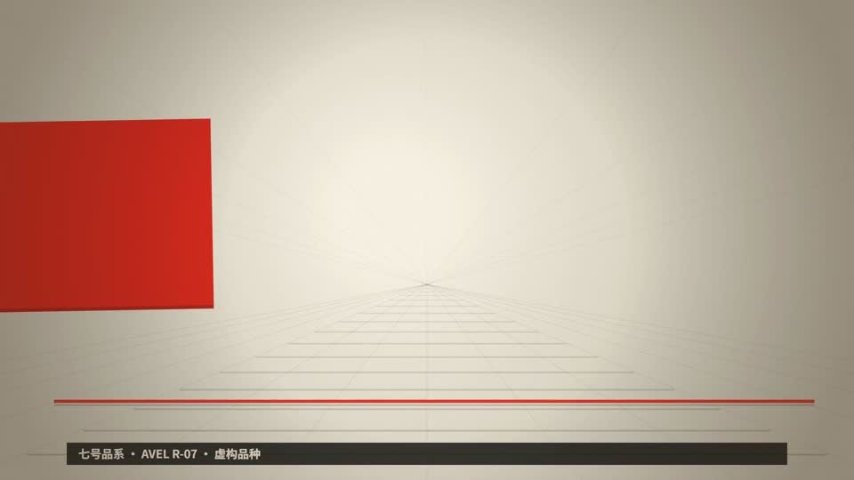
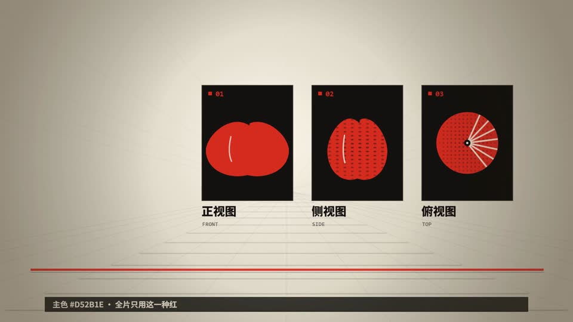
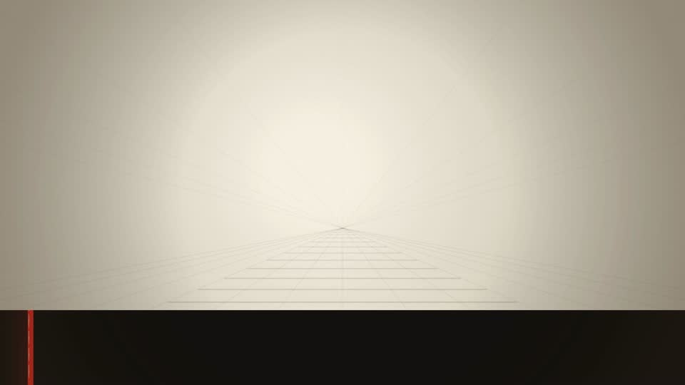

TOOL 01python
viewer_audit.py
逐秒动能量、外圈边缘动能量（判断机位是否在动）、指定字幕带的能量。它回答：这是一支在动的片，还是一叠会翻的图。
# 字幕带在 980–1060
python tools/viewer_audit.py \
film.mp4 --band 980,1060
edge 0.70 · full 1.94 · band 0.40
同一份文案，十种拍法，六个数字。点进来的每一屏，都可以在仓库里被复现。
01 / 变量文案、色板、字体、渲染器全部固定，只改「怎么拍」——从幻灯片到一镜到底，做了十版。
02 / 测量每版量六个数字。真正分辨得开的是构图中心率、硬切数、有没有东西在真动。
03 / 结论结论不是心得，而是动手前必须过的一道门：五条硬规则 + 三件测谎工具。
02 — 十版 THE TEN
读法：硬切越少、平均镜长越长、构图中心率越低，越不像幻灯片。
文字面积曾被我当成主判据，它是反直觉的——A 版面积最低，却最像 PPT。
A 版：四页居中、淡入淡出。所有东西都压在画面正中，眼睛没有被牵引的理由。
J 版：十五秒一镜到底，四次物件进出，全部落在 80.75 BPM 的拍点上。
整片镜头位移。运镜只做两件事：换重点时倾身，读完时回正。
03 — 硬规则 FIVE RULES
切换是剪辑的手段，不是遮丑的工具。要让东西换，先让它动起来；实在要换场，用镜头运动接，不要用切。
04 — 工具 LIE DETECTORS
三个脚本，不到 400 行，只依赖 ffmpeg、numpy、playwright-core。出片前跑一遍，能挡掉九成的「我以为它在动」。
逐秒动能量、外圈边缘动能量（判断机位是否在动）、指定字幕带的能量。它回答：这是一支在动的片，还是一叠会翻的图。
# 字幕带在 980–1060
python tools/viewer_audit.py \
film.mp4 --band 980,1060
BPM、拍周期、相位。把每个进出动作对齐到拍点，节奏就不再靠手感：物体落位与鼓点同一下。
# 取第 5 秒起 15 秒
python tools/beats.py bgm.mp3 \
--from 5 --length 15
硬切数、构图中心率、文字面积峰值。判「像不像 PPT」的三个硬指标，全在这里。
# 指向作品目录
node tools/metrics.mjs \
./examples/apple-ab
05 — 参考实现 REFERENCE FILM



「赤曜 · J」：走廊灭点固定、地面线向观众流；物件自己从深处来、停住给人读、再被带走。四次进出，全部落在拍点上。
06 — 装 INSTALL
$ git clone https://github.com/Ariesheepy/video-craft.git $ cd video-craft $ bash scripts/install.sh # Windows $ powershell -ExecutionPolicy Bypass -File scripts\install.ps1